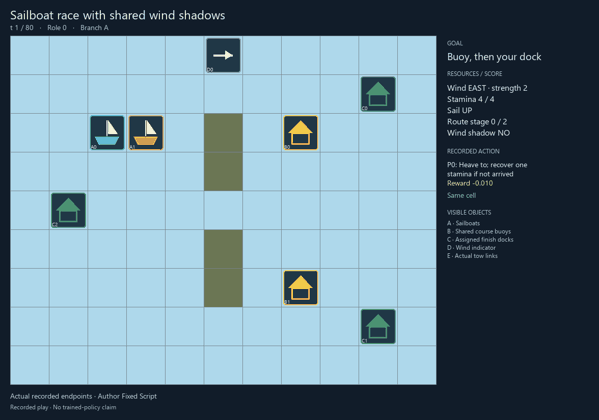
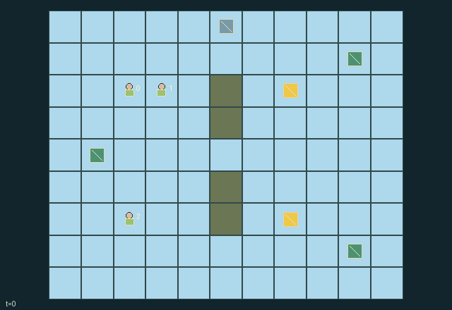

GI118 · Sailboat race with shared wind shadows

Original recording scope: 角色视角 · Mode: 固定脚本演示
Additional generated state replay (different trajectory / full-state debug)

Each skipper must touch its assigned buoy and then its distinct dock. Skippers receive own progress/arrival rewards and compete for the first-arrival bonus while towing can help a partner.
Identity and original contract
3 independently actionable roles; 9 discrete commands per role; 152 native observation columns per role; original horizon 80 steps. Declared per-step reward range: -0.01 to 2.0. Observation regime: partially_observable.
Source SHA-256: f8c8a71d6aa82bf907577f8cd2b38524b9bc761447d98f42d7c5994c6d055d29
The objective, rewards, population, map and horizon remain original. A preview is not a success claim.
Objective and gameplay
Each skipper must touch its assigned buoy and then its distinct dock. Skippers receive own progress/arrival rewards and compete for the first-arrival bonus while towing can help a partner.
A raised sail casts a length-two downwind shadow with crosswind width one, preventing nearby high-sail movement. Low sails row at a stamina cost. Voluntary low-sail recipients can be pulled into a helper old cell; the helper loses any second movement cell and one stamina. Occupancy, islands, buoy access and first-arrival timing create additional coupling.
- Touch the assigned buoy, then your own dock. Arrival is permanent.
- A raised sail blocks wind for boats up to two cells downwind and one cell sideways. A shadowed raised sail cannot move.
- Lowered sails row one cell for one stamina. Holding recovers one stamina, capped at four.
- Unshadowed raised sails move one cell, or two directly downwind when strength is two.
- A high-sail helper can attach to an adjacent low-sail consenting boat. Towing caps speed at one cell and costs the helper one stamina.
- Boats cannot enter occupied cells or islands; competing moves to one cell cancel. Tow recipients follow into the helper old cell.
- The first arrival earns a shared-if-simultaneous half-point bonus. Waiting before arrival costs 0.01 per step.
- Wind changes every six transitions. Other boats and tow links obey the role-local visibility mask.
Ending: All three boats have arrived. A moored boat remains a stationary physical obstacle and has only action 0. Otherwise the time bound is 80 raw transitions.
What this game explores
Resource commons & externalities: An action changes a persistent resource or burden that another role also encounters. Compare extraction with maintenance and record the downstream resource trajectory.
Joint transport & shared access: Positions, load geometry, occupancy and persistent access constrain whose action can succeed next. Distinguish physical handoff, shared controls and simultaneous force from a cosmetic cooperation label.
Team opposition & interception: Cooperation within a team can coexist with opposition between teams. Preserve team membership, capture and possession rules, and report each team's outcomes instead of assuming a single shared return.
These are questions supported by rule structure, not observed learning effects.
Play it: operating walkthrough
crucibles play --game gi118Keep Python running and open its printed address. Select this game, set a seed and press Create session. The game itself is always English.
Assign a role range to Host with Assign / take over, or Assign all roles. Invite a second participant with Create player invitation, then assign a disjoint subset. Every original role is available.
For every owned role choose a legal command and press Queue. Arrow keys / WASD queue a declared directional action for the current role camera when available. Space or Advance one joint step advances everyone together. Non-directional games use the selectors.
Unqueued roles use the labelled untrained uniform-legal policy. Take over or release roles before the next step without resetting. Full-state debug is privileged and permanently logged; role cameras preserve permissions. Close the session to retain logs. Server restart does not restore sessions.
Complete command reference
IDs and English labels exactly match the manifest. Availability depends on role, resources, location and phase. An available action can still have no productive effect.
0·Heave to; recover one stamina if not arrived
1·Steer east
2·Steer west
3·Steer south
4·Steer north
5·Raise sail; leave any incoming tow
6·Lower sail; permit an adjacent high-sail boat to tow
7·Attach tow to lowest-index eligible adjacent low-sail boat
8·Release own outgoing and incoming tow
Roles and capability identifiers
These original role names describe capabilities, not interchangeable skins. Check each owned role's legal selector before planning handoffs.
agent_0·North-course skipper; buoy 0 then north-east dock
agent_1·South-course skipper; buoy 1 then south-east dock
agent_2·Return-course skipper; shared buoy 0 then west dock
Information and observation permissions
The terrain, buoy/dock locations, wind and clock are public. Another boat is visible exactly within Manhattan distance 3; its displayed attributes are present in the masked peer record. Own goal, sail, stamina and route state are always available. Tow entities are visible only when both endpoints are visible. Invisible data are zero with an explicit visibility bit; no privileged full state is a policy input.
The GIF is full-state debug and may reveal hidden entities or private state. Train on obs[agent], not the picture, state tree or another role's private row. Field slices and visibility are in the original manifest.
Reinforcement-learning integration
import jax
from crucibles_jaxmarl import make
env = make("gi118")
key = jax.random.PRNGKey(0)
key, rk, ak, sk = jax.random.split(key, 4)
obs, state = jax.jit(env.reset)(rk)
actions = env.sample_actions(ak, state)
obs, state, rewards, dones, info = jax.jit(env.step_env)(sk, state, actions)
done = dones["__all__"]Observations are float32 vectors of width 152; actions are scalar int32; masks have 9 entries. Supply all 3 roles each transition. Masked sampling is an engineering reference, not a trained learner.
step_env retains terminal data without reset. step performs outer autoreset and keeps terminal data in info["raw_state"] and info["raw_observation"]. Use dones["__all__"] for episode boundaries; separate completion, failure and time limit in analysis.
JIT or vmap equal identities and shapes. Split independent reset, policy and transition keys. Group different shapes explicitly; do not shrink the population or horizon. Host rendering stays outside training.
Training questions and fair evaluation
Define valid completion from the objective before fitting. Preserve original rewards and also report real deliveries/services, losses, resource state, unresolved episodes and per-role returns. Animation is not a reward signal.
An action changes a persistent resource or burden that another role also encounters. Compare extraction with maintenance and record the downstream resource trajectory.
Positions, load geometry, occupancy and persistent access constrain whose action can succeed next. Distinguish physical handoff, shared controls and simultaneous force from a cosmetic cooperation label.
Cooperation within a team can coexist with opposition between teams. Preserve team membership, capture and possession rules, and report each team's outcomes instead of assuming a single shared return.
Compare memory, communication or centralized critics under matched actor information. Declare critic access; keep actor inputs role-filtered. Match partner/opponent distributions, masks, compute and checkpoint selection. Final tests never enter fitting or selection.
Independent training runs or source-pairing blocks are inferential units; episodes from one policy are not independent training replications. Save hashes, keys, versions, device, time and cost. Negative, zero, failed and indeterminate outcomes are valid. No trained checkpoint or target score is supplied.
Classification and evidence
Overlapping editorial labels are reading aids, not proof of novelty, difficulty, strategic equivalence or learning effects.
- Resource commons & externalities
- Evidence
manifest.task.objective: Each skipper must touch its assigned buoy and then its distinct dock. Skippers receive own progress/arrival rewards and compete for the first-arrival bonus while towing can help a partner.
- Joint transport & shared access
- Evidence
manifest.task.observation_access: The terrain, buoy/dock locations, wind and clock are public. Another boat is visible exactly within Manhattan distance 3; its displayed attributes are present in the masked peer record. Own goal, sail, stamina and route state are always available. Tow entities are visible only when both endpoints are visible. Invisible data are zero with an explicit visibility bit; no privileged full state is a policy input.
- Evidence
manifest.actions.6: Lower sail; permit an adjacent high-sail boat to tow
- Evidence
manifest.actions.7: Attach tow to lowest-index eligible adjacent low-sail boat
- Team opposition & interception
- Evidence
manifest.task.objective: Each skipper must touch its assigned buoy and then its distinct dock. Skippers receive own progress/arrival rewards and compete for the first-arrival bonus while towing can help a partner.
Source, receipts and preview limits
The additional generated state GIF replays saved untrained legal actions through the original kernel. At most 25 actual endpoints include initial and terminal state; no invented interpolation. It is full-state debug, not the role observation. Where an original scene preview exists, it is displayed first with its own recorded information scope. The two recordings may use different trajectories and views.
Original source, observation slices, manifest and mechanism
Native receipt · Presentation receipt
Engineering passes do not establish learning. Nonzero floating differences remain recorded and undetermined; no new tolerance was introduced. Human scores remain unverified.